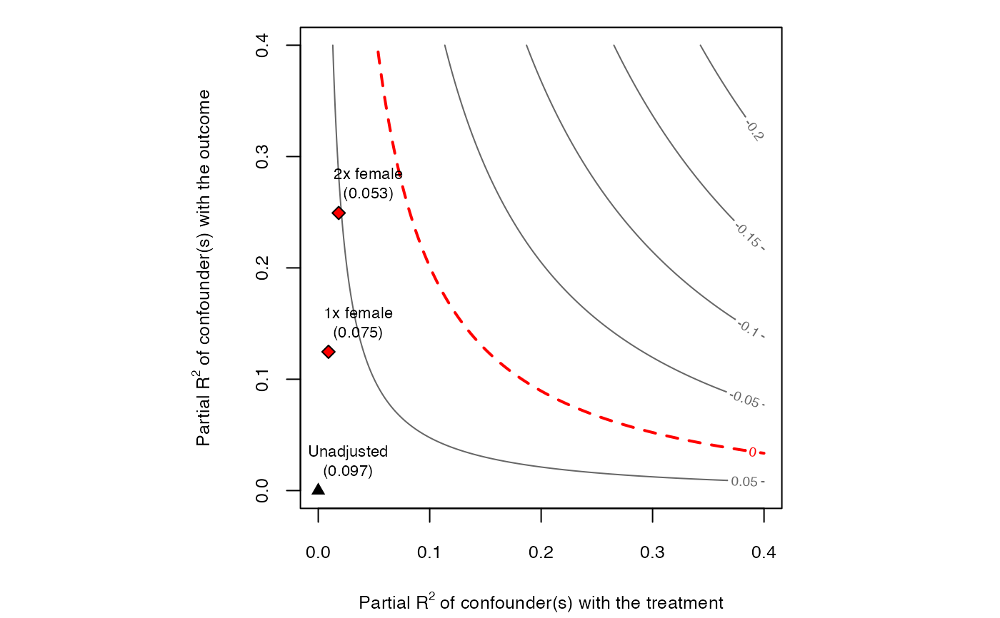

Contour plots of omitted variable bias for sensitivity analysis. The main inputs are an lm model, the treatment variable
and the covariates used for benchmarking the strength of unobserved confounding.
The horizontal axis of the plot shows hypothetical values of the partial R2 of the unobserved confounder(s) with the treatment.
The vertical axis shows hypothetical values of the partial R2 of the unobserved confounder(s) with the outcome.
The contour levels represent the adjusted estimates (or t-values) of the treatment effect.
The reference points are the bounds on the partial R2 of the unobserved confounder if it were k times ``as strong'' as the observed covariate used for benchmarking (see arguments kd and ky).
The dotted red line show the chosen critical threshold (for instance, zero): confounders with such strength (or stronger) are sufficient to invalidate the research conclusions.
All results are exact for single confounders and conservative for multiple/nonlinear confounders.
See Cinelli and Hazlett (2020) for details.
ovb_contour_plot(...) # S3 method for lm ovb_contour_plot( model, treatment, benchmark_covariates = NULL, kd = 1, ky = kd, r2dz.x = NULL, r2yz.dx = r2dz.x, bound_label = "manual", sensitivity.of = c("estimate", "t-value"), reduce = TRUE, estimate.threshold = 0, t.threshold = 2, nlevels = 10, col.contour = "grey40", col.thr.line = "red", label.text = TRUE, cex.label.text = 0.7, round = 3, ... ) # S3 method for formula ovb_contour_plot( formula, data, treatment, benchmark_covariates = NULL, kd = 1, ky = kd, r2dz.x = NULL, r2yz.dx = r2dz.x, bound_label = NULL, sensitivity.of = c("estimate", "t-value"), reduce = TRUE, estimate.threshold = 0, t.threshold = 2, nlevels = 10, col.contour = "grey40", col.thr.line = "red", label.text = TRUE, cex.label.text = 0.7, round = 3, ... ) # S3 method for numeric ovb_contour_plot( estimate, se, dof, r2dz.x = NULL, r2yz.dx = r2dz.x, bound_label = rep("manual", length(r2dz.x)), sensitivity.of = c("estimate", "t-value"), reduce = TRUE, estimate.threshold = 0, t.threshold = 2, show.unadjusted = TRUE, lim = NULL, lim.y = NULL, nlevels = 10, col.contour = "black", col.thr.line = "red", label.text = TRUE, cex.label.text = 0.7, label.bump.x = NULL, label.bump.y = NULL, xlab = NULL, ylab = NULL, cex.lab = 0.8, cex.axis = 0.8, cex.main = 1, asp = lim/lim.y, list.par = list(mar = c(4, 4, 1, 1), pty = "s"), round = 3, ... )
| ... | arguments passed to other methods. First argument should either be an |
|---|---|
| model | An |
| treatment | A character vector with the name of the treatment variable of the model. |
| benchmark_covariates | The user has two options: (i) character vector of the names of covariates that will be used to bound the plausible strength of the unobserved confounders. Each variable will be considered separately; (ii) a named list with character vector names of covariates that will be used, as a group, to bound the plausible strength of the unobserved confounders. The names of the list will be used for the benchmark labels. Note: for factor variables with more than two levels, you need to provide the name of each level as encoded in the |
| kd | numeric vector. Parameterizes how many times stronger the confounder is related to the treatment in comparison to the observed benchmark covariate.
Default value is |
| ky | numeric vector. Parameterizes how many times stronger the confounder is related to the outcome in comparison to the observed benchmark covariate.
Default value is the same as |
| r2dz.x | Hypothetical partial R2 of unobserved confounder Z with treatment D, given covariates X. |
| r2yz.dx | Hypothetical partial R2 of unobserved confounder Z with outcome Y, given covariates X and treatment D. |
| bound_label | label to bounds provided manually in |
| sensitivity.of | should the contour plot show adjusted estimates ( |
| reduce | Should the bias adjustment reduce or increase the
absolute value of the estimated coefficient? Default is |
| estimate.threshold | critical threshold for the point estimate. |
| t.threshold | critical threshold for the t-value. |
| nlevels | number of levels for the contour plot. |
| col.contour | color of contour lines. |
| col.thr.line | color of threshold contour line. |
| label.text | should label texts be plotted? Default is |
| cex.label.text | size of the label text. |
| round | number of digits to show in contours and bound values |
| formula | an object of the class |
| data | data needed only when you pass a formula as first parameter. An object of the class |
| estimate | Coefficient estimate. |
| se | Standard error of the coefficient estimate. |
| dof | Residual degrees of freedom of the regression. |
| show.unadjusted | should the unadjusted estimates be shown? Default is `TRUE`. |
| lim | sets limit for x-axis. If `NULL`, limits are computed automatically. |
| lim.y | sets limit for y-axis. If `NULL`, limits are computed automatically. |
| label.bump.x | bump on the x coordinate of label text. |
| label.bump.y | bump on the y coordinate of label text. |
| xlab | label of x axis. If `NULL`, default label is used. |
| ylab | label of y axis. If `NULL`, default label is used. |
| cex.lab | The magnification to be used for x and y labels relative to the current setting of cex. |
| cex.axis | The magnification to be used for axis annotation relative to the current setting of cex. |
| cex.main | The magnification to be used for main titles relative to the current setting of cex. |
| asp | the y/x aspect ratio. Default is 1. |
| list.par | arguments to be passed to |
The function returns invisibly the data used for the contour plot (contour grid and bounds).
Cinelli, C. and Hazlett, C. (2020), "Making Sense of Sensitivity: Extending Omitted Variable Bias." Journal of the Royal Statistical Society, Series B (Statistical Methodology).
# runs regression model model <- lm(peacefactor ~ directlyharmed + age + farmer_dar + herder_dar + pastvoted + hhsize_darfur + female + village, data = darfur) # contour plot ovb_contour_plot(model, treatment = "directlyharmed", benchmark_covariates = "female", kd = 1:2)